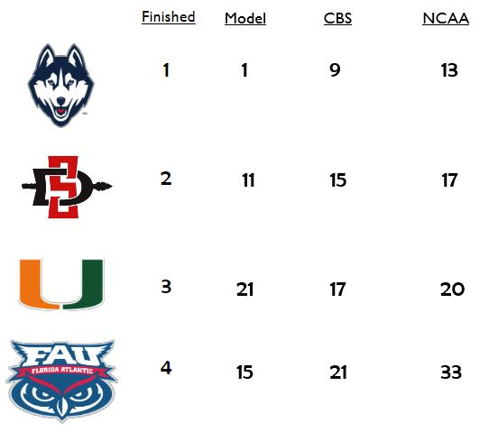
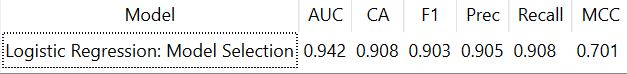
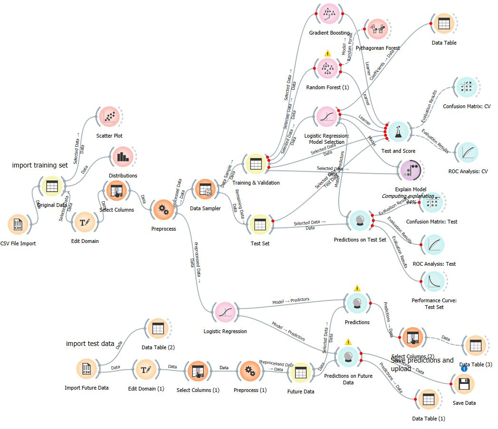

Data Mining
Selecting the right teams for March Madness
About the project


For our data mining final project, we were split into groups of four and tasked with finding a problem that could be solved using data mining model of some type. Our group decided to build a model to determine which men's college basketball teams should make the march madness tournament. We built this model with the purpose of working with the selection committee to determine which teams deserve the final at-large bids. We built the model in the fall of 2023 but used the data from the 2022-2023 season and built a model for the 2023 tournament. We gathered our data from Kaggle and used the season prior to the 2022-2023 season to train our models and ultimately used the logistic regression model for the testing data.
To the left is one of the measuers we were most proud of for our model. Our model actually had UConn as the number one team in the country heading into the tournament, much higher than the 4 seed the selection committee gave them. In addition to UConn, we had the rest of the Final Four teams graded out as underseeded by the selection committee and CBS, who is regarded as the best bracketology website. In addition to our model having these teams rated higher than they were, we also were proud of the teams on the bubble, where we feel the project thrives. Our model said that Wisconsin, North Texas, Utah Valley, and UAB should have made the tournament, but instead they all made the NIT. These four teams ended up making up the final four teams in the NIT tournament which we believe shows that they were undervalued by the selection committee, but not by our measures. In contrast to these four teams, the two schools that made the tournament that our model disagreed with were Nevada and Mississippi State. Like the aforementioned four teams, we believe our model was right as neither team won a game in their respective tournament runs.
The model workflow

To the left of the card is our Orange workflow, while I enjoyed working on this project and did attempt to run it again for the 2024 March Madness (where we correctly predicted UConn going back to back). I will likely be doing this every spring to see if it can correctly predict the winner. If you are interested to learn more about this project or about the workflow specifically, please feel free to email me or reach out through LinkedIn.